White Irbis — Follow the White Irbis
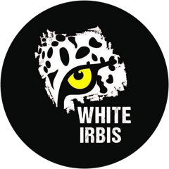
ТурыToursՏուրեր
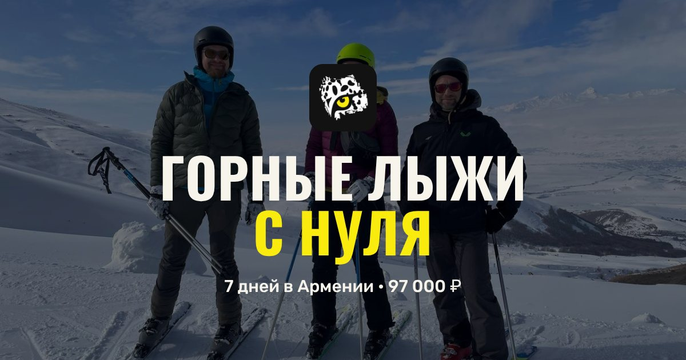


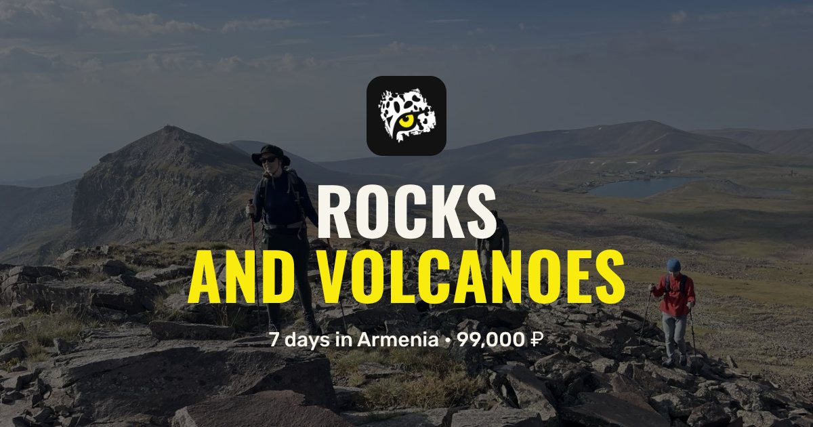
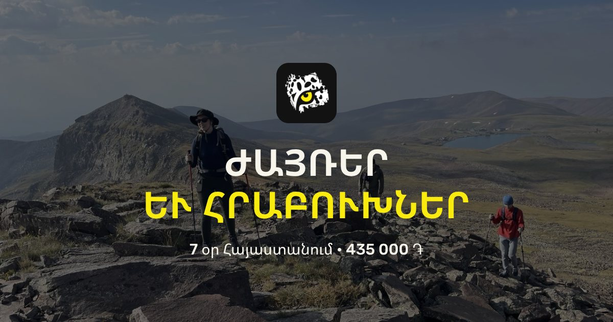

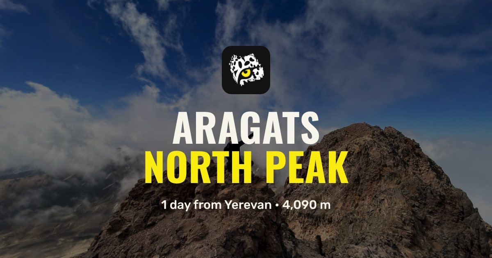

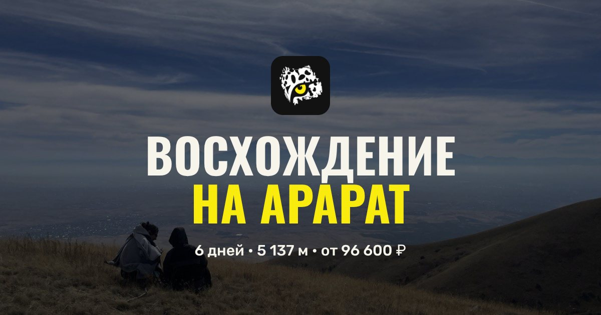

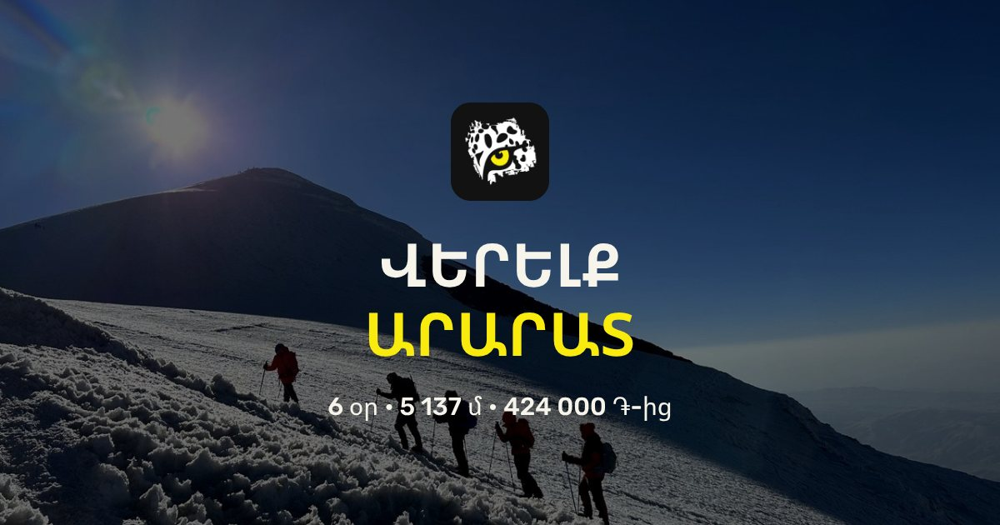
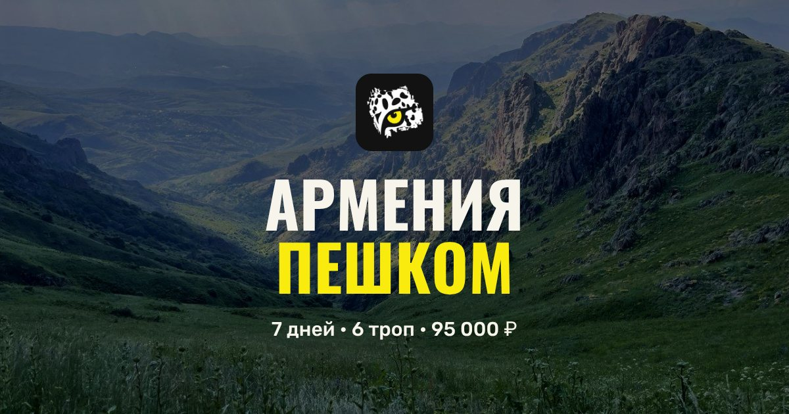
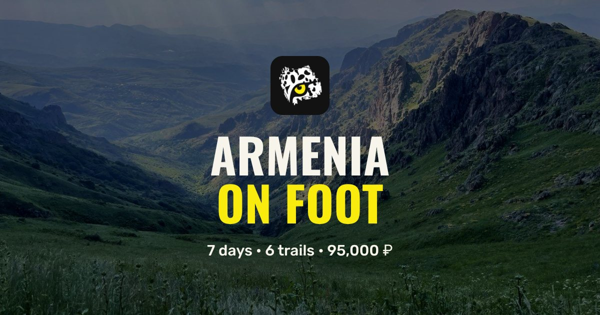
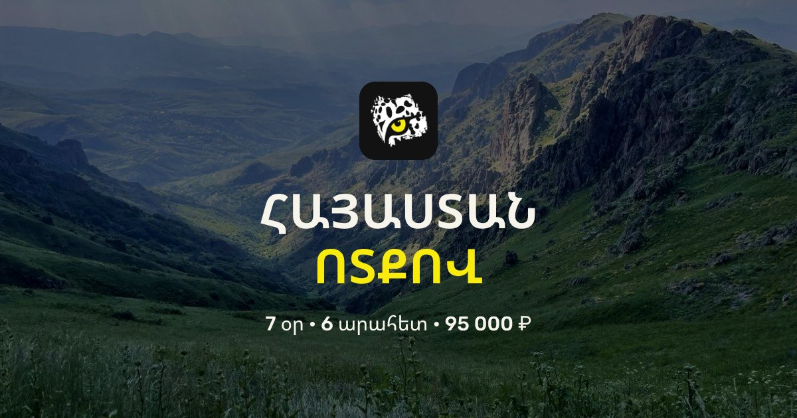
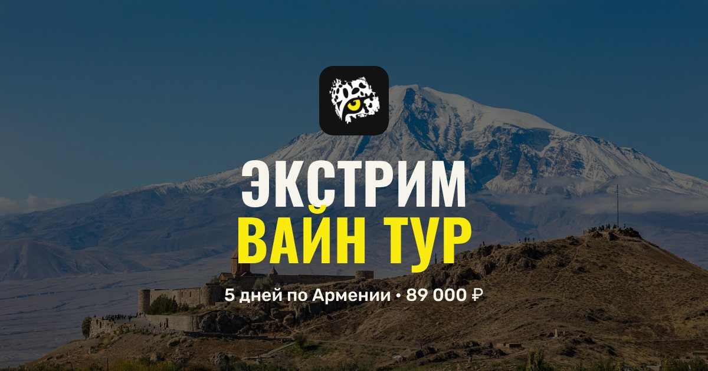


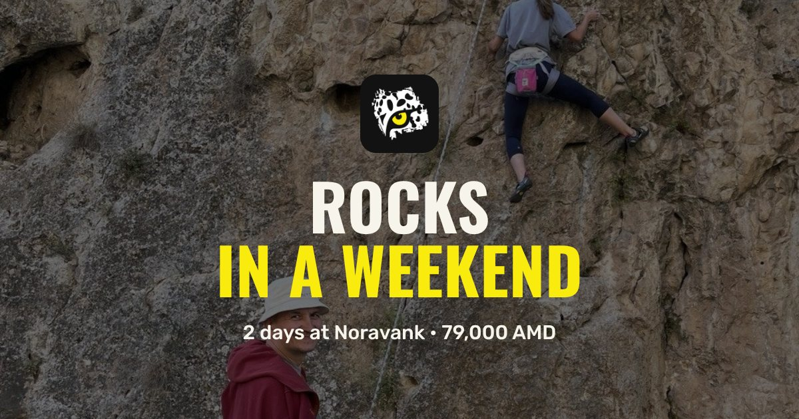

ГайдбукиGuidebooksՈւղեցույցներ

12 вершин — от «спящего великана» Ара до 4 090 м Арагаца: высота, старт, сложность и сезон.12 peaks — from Ara, the sleeping giant, to Aragats at 4,090 m: height, trailhead, difficulty and season.12 գագաթ՝ «քնած հսկա» Արայից մինչև 4 090 մ Արագած. բարձրություն, մեկնարկ, բարդություն և սեզոն։
Открыть гайдбук →Open the guidebook →Բացել ուղեցույցը →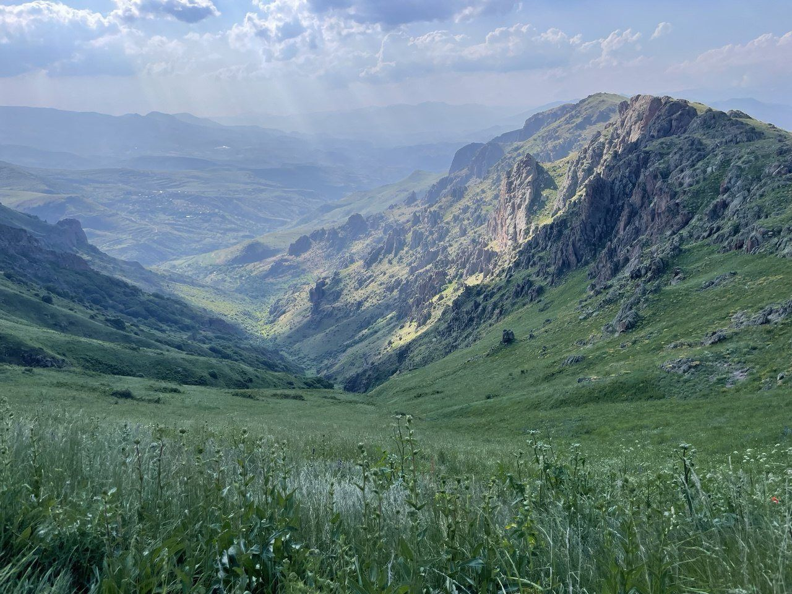
819 км через всю Армению: семь регионов, сезоны, навигация, ночёвки и вода.819 km across Armenia: seven regions, seasons, navigation, overnights and water.819 կմ ամբողջ Հայաստանով՝ յոթ մարզ, սեզոններ, կողմնորոշում, գիշերակաց և ջուր։
Открыть гайдбук →Open the guidebook →Բացել ուղեցույցը →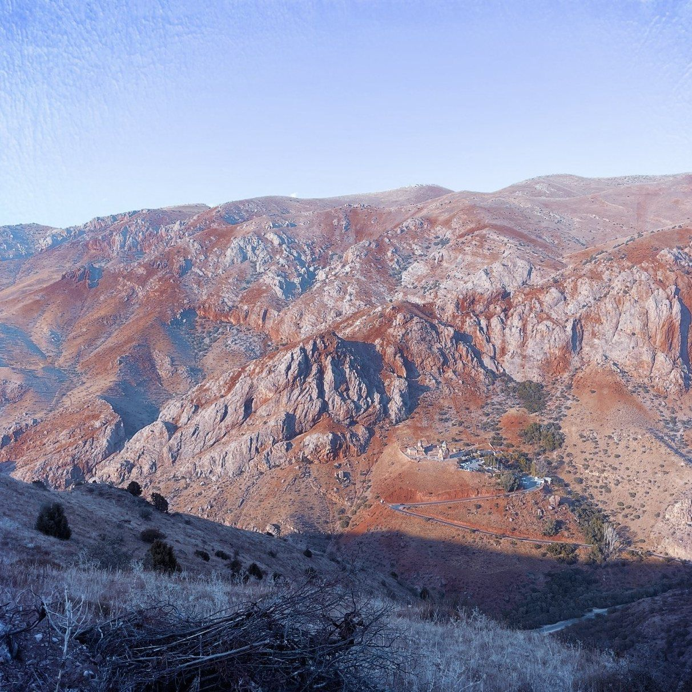
304 маршрута в 15 районах: схемы, категории, подходы. Для тех, кто лазает сам.304 routes in 15 areas: topos, grades, approaches. For climbers going on their own.304 երթուղի 15 շրջանում՝ սխեմաներ, կարգեր, մոտեցումներ։ Նրանց համար, ովքեր մագլցում են ինքնուրույն։
Открыть гайдбук →Open the guidebook →Բացել ուղեցույցը →